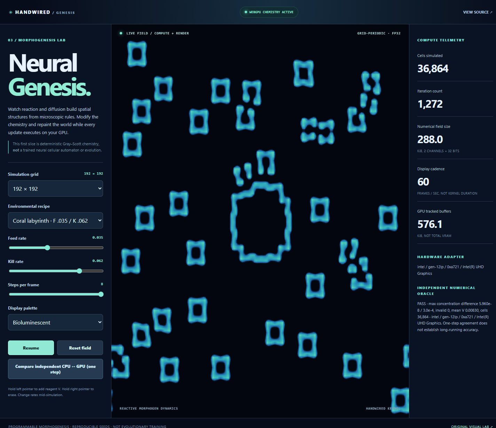
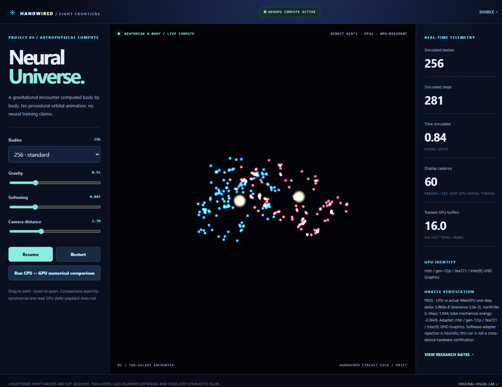
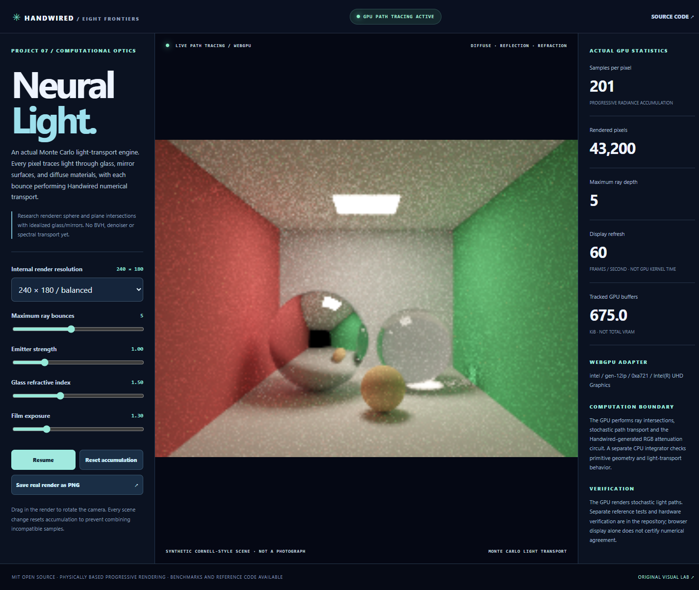

01 URBAN DYNAMICS
Neural Earth
Georeferenced Kingston, realistic road graphs, signal coordination, synthetic traffic and disaster scenarios.
Architecture · no public demo
OPEN-SOURCE COMPUTATION / RESEARCH PORTFOLIO / 2026
From city-scale simulation to digital organisms and orbital mechanics. This is an engineering program, not a collection of simulated screenshots. Each system shows its actual research maturity. New experimental previews run real algorithms in browsers that support WebGPU; NVIDIA hardware numerical verification and browser presentation verification are separate gates.
THE RESEARCH WORKSTREAMS
Native NVIDIA Vulkan physics is verified for the newest three systems; their browser renderers are experimental previews, not certified hardware deployments.
Georeferenced Kingston, realistic road graphs, signal coordination, synthetic traffic and disaster scenarios.
Real WCSPH particles, pressure, viscosity and gravity. 18,432 GPU-simulated fluid particles verified on NVIDIA T4.

Working deterministic Gray–Scott morphogenesis and Handwired GPU chemistry. Neural training and evolution are future work.

Real pairwise Newtonian N-body forces and Handwired-generated GPU integration, with an independent CPU oracle.
Image-based camera recovery, scene reconstruction and Gaussian splat exploration.
True cohesive spring-bond strain, force accumulation and irreversible fracture. Actual GPU broken-bond state.

Real GPU path tracing: diffuse bounce lighting, mirror reflections, glass transmission, Handwired material transport.
4,096 independently simulated 2DOF articulated legs with Handwired-generated PD motors and ground contact.
OUR COMPUTATION CONTRACT
Each numerical experiment has a separate handwritten or established oracle. Hardware-backed WebGPU kernels, device identification, synchronized timings and screenshots are independent gates. A GPU image is never proof that the underlying physics ran on the GPU.
Inspect measured GPU benchmarks ↗Review the public engineering ledger ↗